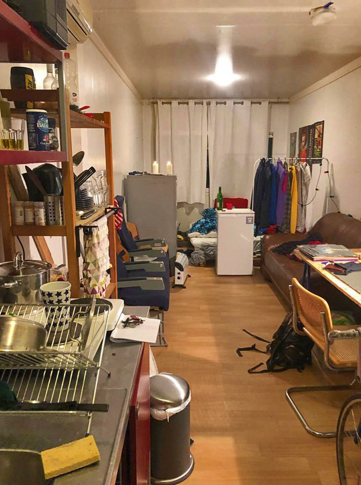
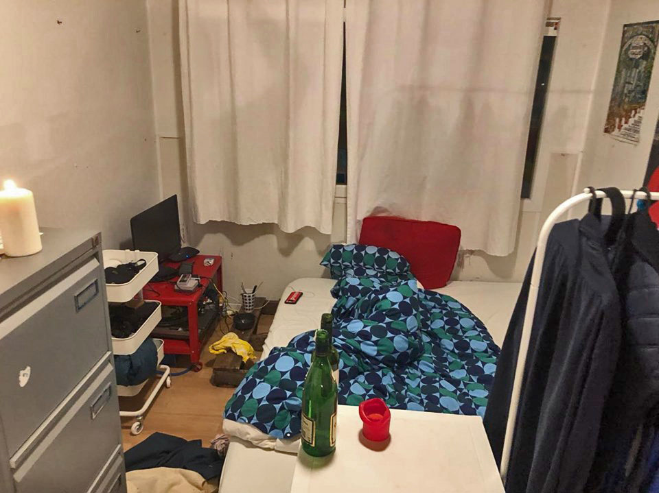
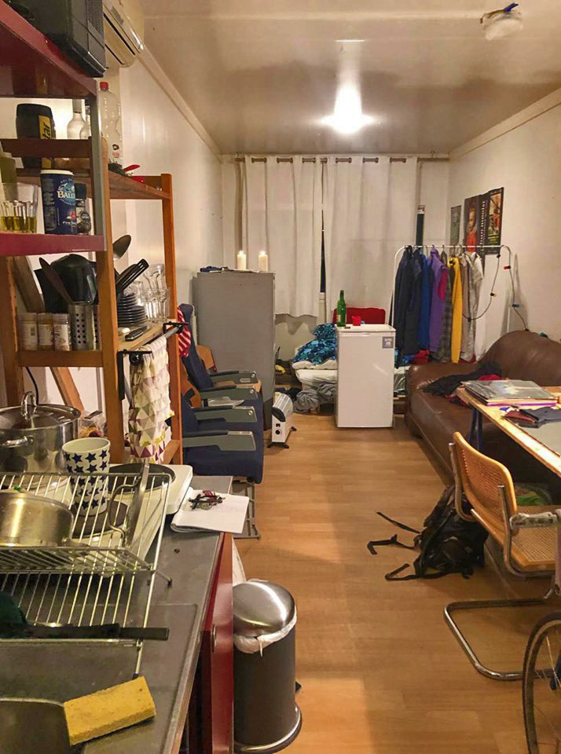
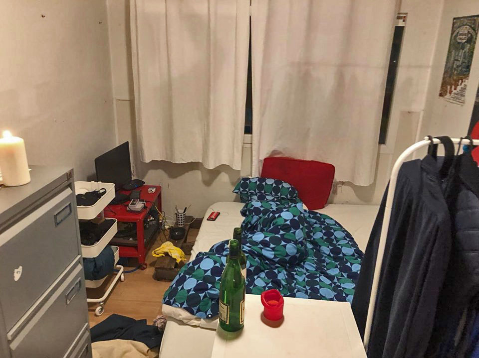

white door
 



- Favorite color?
green
- Favorite item?
fridge (cause it's my closet)
- Most expensive item for in the container?
Closet office organizor (also a closet)
- What would you like to have here?
a hammock
- Why are you here?
art studies in the Rietveld
- How do you pay for the container?
My mom pays
- Who do you miss?
Can I miss more than 1 person?
- You can do what you want, it's your interview.
My family, my girlfriend but i don't miss a lot of people,
It's like a new life, you don't really think about those people...